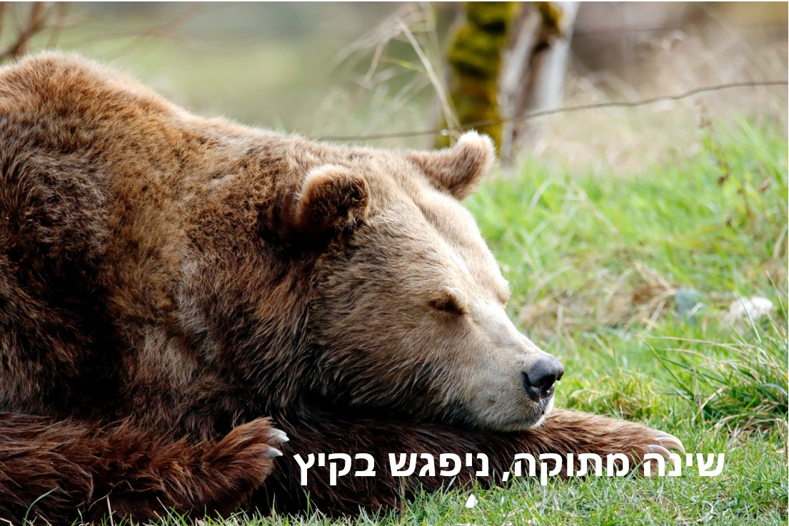

לפעמים קר לכם ומתחשק לכם לישון עד השנה הבאה? יש כמה בעלי חיים שאחרי תרדמת חורף של כמה חודשים הם חוזרים לחייהם הרגילים, עד החורף הבא
כשאתם הולכים לישון כל ערב, הגוף שלכם מתאים את עצמו לשינה: קצב הלב מואט, חומרים שנקראים הורמונים משתחררים לדם וחום הגוף יורד במקצת. וכל הטרחה הזו רק בשביל כמה שעות! אז מה קורה בגופם של בעלי חיים שישנים במשך שבועות ואפילו חודשים?
כשאנחנו חושבים על שינה ארוכה, אנחנו חושבים בדרך כלל על תרדמת החורף של הדובים. ובאמת, דובי גְרִיזְלִי, דובים שחורים ודובים נוספים החיים באזורים קרים נכנסים למאורה שלהם בתחילת החורף, הולכים לישון ומתעוררים שוב רק עם בוא האביב. הם יכולים להישאר במאורה חמישה חודשים ויותר, וכל הזמן הזה הם לא אוכלים, לא שותים ואפילו לא הולכים לשירותים. במקום להטיל שתן הם ממחזרים את החומרים שנמצאים בשתן וכך מפחיתים את הצורך באכילה.
אל חשש, הגוף שלהם מותאם לשינה הארוכה הזו. תאי היצורים החיים פועלים כל הזמן – הם מפרקים מזון, בונים חלבונים וחומרים אחרים, מְפַנִּים פסולת ועוד. כשהדובים בתרדמת חורף, הפעילות הזו אינה מפסיקה אלא נעשית אטית הרבה יותר ועומדת על כרבע מהקצב הנורמלי שלה. גם קצב הלב של הדוב מואט, מכ-55 פעימות לדקה עד תשע בדקה בלבד, וחום גופו יורד, אבל לא בהרבה.
לא צריך לאכול
הדובים אינם היצורים היחידים שנכנסים לתרדמת חורף - סנאים, נובחניות (סוג של מכרסם שמשמיע קול נביחה), עטלפים, קיפודים וכנראה גם ציפורים ישנים תקופות ארוכות כשבחוץ קר וקשה להשיג מזון. חלקם גם מתייחסים אל שנתם הרבה יותר ברצינות מאשר הדובים.
כן, שנתם של הדובים קלה יחסית. חום הגוף שלהם יורד רק מעט והם מסוגלים להתעורר במהירות ובקלות אם מישהו מפריע להם (זה לא אומר שהם יהיו במצב רוח טוב - מאוד לא מומלץ להעיר דוב ישן...). בעלי חיים אחרים מאטים את הפעילות בתאים שלהם עד שהיא נפסקת כמעט לחלוטין, ומורידים את טמפרטורת הגוף שלהם עד מעלות בודדות מעל האפס, טמפרטורה דומה לזו של המקרר הביתי. סנאי הקרקע הוא אלוף תרדמת החורף, וטמפרטורת הגוף שלו יכולה לרדת עד שלוש מעלות מתחת לאפס. בהתאם, גם לוקח לו הרבה יותר זמן לצאת מהשינה העמוקה ולהתעורר.
איך בעלי החיים מתקיימים זמן ארוך כל כך בלי אוכל? חלקם דואגים לצייד את המאורה במאגרי מזון ומדי פעם הם מתעוררים, אוכלים וחוזרים לישון. אחרים אוכלים הרבה (מאוד) לפני שהם נכנסים לתרדמת החורף, משמינים ובזמן השינה מקיימים את גופם מהשומן שצברו. כשהם מתעוררים אחרי כמה חודשים כאלו, הם שוקלים הרבה פחות (כמעט חצי) ממה ששקלו כשהלכו לישון.
השומן והמזון שנאגר במאורה לא היו מספיקים לאותם היצורים אם גופם היה מקיים פעילות רגילה. אך מאחר שהפעילות בתאי הגוף בזמן תרדמת החורף מעטה כל כך, הם אינם זקוקים להרבה אוכל ויכולים להסתפק במקורות מזון צנועים.
התאמת השעון הפנימי לסביבה החיצונית
בעלי החיים אינם יכולים פשוט ללכת לישון יום אחד – הם צריכים להתכונן לשינה, לאגור מזון (בבטן או במאורה) ולהכין את הגוף לחוסר פעילות ארוך. איך הם יודעים שהגיע הזמן? האם הם מתחילים להתכונן כשהטמפרטורה יורדת, או כשהימים מתקצרים? לשאלות אלה עדיין אין תשובה ברורה, אך נראה שלפחות לחלק מבעלי החיים יש שעון פנימי והם אינם זקוקים לסימנים מהסביבה.
מרמיטות, למשל, מתחילות לאכול כהכנה לתרדמת חורף גם כשמחזיקים אותן בטמפרטורה קבועה. אבל זה לא אומר שאין לסביבה השפעה כלל: אם הסימנים שהמרמיטה מקבלת מהטמפרטורה ומאורך היום הם בדיוק ההפך ממה שהשעון הפנימי אומר לה, השעון הפנימי מקבל את הרמז ומשתנה כדי להתאים לתנאים החדשים. המרמיטה היא מכרסם, קרוב משפחה של הסנאי, שחי בחצי הצפוני של כדור הארץ. אם מעבירים אותה לאוסטרליה, שבה שורר חורף בחודשים שבהם אצלנו קיץ, היא תזדקק לשנה-שנתיים של חיים באזור הזמן החדש עד שתיכנס לתרדמת חורף במועד שמתאים לאזור הזה.
מחקרים גם הראו שהטמפרטורה, ביחד עם כמות המזון שבסביבה, יכולים להשפיע על הזמן שבו בעלי החיים יתחילו את תרדמת החורף עצמה. כך, אם יש ימים חמים מהרגיל בסתיו, בעלי החיים ילכו לישון מאוחר יותר.
החורף חם? נישן בכל זאת!
רוב בעלי החיים שנכנסים לתרדמת חורף חיים באזורים קרים מאוד, והשינה הארוכה עוזרת להם לשרוד את הזמן שבו לרוב האדמה מכוסה שלג וקשה למצוא מזון. אך יש גם בעלי חיים שחיים באזורים טרופיים וחמים – ובכל זאת ישנים שנת חורף. בעל חיים כזה הוא הלֶמוּר הננסי עבה הזנב, שחי, כמו כל הלֶמוּרים, באי מדגסקר שלחופי אפריקה.
החורף באי לא ממש דומה לעונה המושלגת שבמהלכה ישנים הדובים וסנאי הקרקע. עונת החורף של מדגסקר היא חמימה ונעימה, עם טמפרטורות שיכולות להגיע ליותר מ-30 מעלות, ובכל זאת הלמור הננסי מבלה עד שבעה חודשים בשינה עמוקה בתוך חור בגזע עץ.
איזו סיבה יש ללמורים לעשות את זה? נראה שהגורם המשותף לישנים באקלים חם ולישנים באקלים קר הוא מחסור במזון. שלא כמו בישראל, הגשמים במדגסקר יורדים בעיקר בקיץ והחורף יבש. הלמור אוכל פרחים, פירות, וחרקים שניזונים גם הם מפירות, וכל אלו נדירים יותר בחורף היבש. הלמורים כנראה מתחבאים בעצים וישנים כדי לעבור את התקופה שבה קשה להם להשיג מזון, ומתעוררים כשזה נעשה קל יותר.
בפעם הבאה שאתם הולכים לישון, חִשבו מה היה קורה אם לא הייתם צריכים לקום בבוקר אלא הייתם ממשיכים לישון כל היום, וגם ביום שאחריו, ואחריו... לפעמים זה נשמע לא רע בכלל. אבל הגוף שלנו לא מותאם לשינה ארוכה שכזו. זו הסיבה לכך שגם ללא שעון מעורר אנחנו מתעוררים בכל יום. ולא נוכל לישון כל החורף - גם אם ננסה.
.jpg)